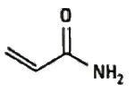
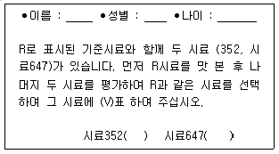
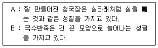

식품기사 (2021-03-07 기출문제)
1과목: 식품위생학
1. 위해평가과정 중 ‘위험성 결정과정’에 해당하는 것은?
- 위해요소의 인체 내 독성을 확인
- 위해요소의 인체노출 허용량 산출
- 위해요소가 인체에 노출된 양을 산출
- 위해요소의 인체용적 계수 산출
(정답률: 67%)

2. 식품에 첨가했을 때 착색효과와 영양강화 현상을 동시에 나타낼 수 있는 것은?
- 엽산(folic acid)
- 아스코르빈산(ascorbic acid)
- 캐러맬(caramel)
- 베타카로틴(ß-carotene)
(정답률: 80%)
3. 돼지를 중간숙주로 하며 인체유구낭충증을 유발하는 기생충은?
- 간디스토마
- 긴촌충
- 민촌충
- 갈고리촌충
(정답률: 88%)
4. 식중독 증상에서 cyanosis 현상이 나타나는 어패류는?
- 섭조개, 대합
- 바지락
- 복어
- 독꼬치
(정답률: 71%)
5. 황색포도상구균 검사방법에 대한 설명으로 틀린 것은?
- 종균배양 : 35~37℃에서 18~24시간 종균배양
- 분리배양 : 35~37℃에서 18~24시간 배양 (황색불투명 집락 확인)
- 확인시험 : 35~37℃에서 18~24시간 배양
- 혈청형배양 : 35~37℃에서 18~24시간 배양
(정답률: 80%)
6. 소독제와 그 주용 작용의 조합이 틀린 것은?
- 크레졸 – 세포벽의 손상
- Ca(OCl)2 - 산화작용
- 에탄올 – 탈수, 삼투압으로 미생물 수축
- 페놀 – 단백질 변성
(정답률: 62%)
7. 식품의 조리 및 가공중이나 유기물질이 불완전 연소되면서 생성되는 유해물질과 관계 깊은 것은?
- polycyclic aromatic hydrocarbon
- zearalenone
- cyclamate
- auramine
(정답률: 77%)
8. 식품을 저장할 때 사용되는 식염의 작용 기작 중 미생물에 의한 부패를 방지하는 가장 큰 이유는?
- 나트륨 이온에 의한 살균작용
- 식품의 탈수작용
- 식품용액 중 산소 용해도의 감소
- 유해세균의 원형질 분리
(정답률: 78%)
9. 방사성 핵종과 인체에 영향을 미치는 표적 조직의 연결이 옳은 것은?
- 137Cs : 갑상선
- 3H : 전신
- 131I : 뼈
- 80Sr : 근육
(정답률: 59%)
10. 식중독균인 클로스트리디움 보툴리늄균의 일반 성상 중 잘못된 것은?
- Gram 양성의 아포 형성균이다.
- 편성 혐기성이다.
- 열에 안정적이며 가열로 파괴하기 어렵다.
- 독소는 매우 독성이 강하다.
(정답률: 67%)
11. 일반적으로 페놀이나 포름알데히드의 용출과 관련이 없는 포장 재료는?
- 페놀수지
- 요소수지
- 멜라민수지
- 염화비닐수지
(정답률: 66%)
12. 소독제와 소독 시 사용하는 농도의 연결이 틀린 것은?
- 석탄산 : 3~5% 수용액
- 승홍수 : 0.1% 수용액
- 알코올 : 36% 수용액
- 과산화수소 : 3% 수용액
(정답률: 88%)
13. 식품 및 축산물 안전관리인증기준에서 중요관리점(CCP) 결정 원칙에 대한 설명으로 틀린 것은?
- 농ㆍ임ㆍ수산물의 판매 등을 위한 포장, 단순처리 단계 등은 선행요건이 아니다.
- 기타 식품판매업소 판매식품은 냉장﹘냉동 식품의 온도관리 단계를 CCP로 결정하여 중점적으로 관리함을 원칙으로 한다.
- 판매식품의 확인된 위해요소 발생을 예방하거나 제거 또는 허용수준으로 감소시키기 위하여 의도적으로 행하는 단계가 아닐 경우는 CCP가 아니다.
- 확인된 위해요소 발생을 예방하거나 제거 또는 허용수준으로 감소시킬 수 있는 방법이 이후 단계에도 존재할 경우는 CCP가 아니다.
(정답률: 65%)
14. 식품에 사용할 수 있는 표백제가 아닌 물질은?
- 차아황산나트륨
- 안식향산나트륨
- 무수아황산
- 메타중아황산칼륨
(정답률: 69%)
15. 바다생선회를 원인식으로 발생한 식중독 환자를 조사한 결과 기생충의 자충이 원인이라면 관련이 깊은 것은?
- 선모충
- 동양모양선충
- 간흡충
- 아니사키스충
(정답률: 85%)
16. 기생충 질환과 중간 숙주의 연결이 잘못된 것은?
- 유구조충 - 돼지
- 무구조충 - 양서류
- 회충 - 채소
- 간흡충 – 민물고기
(정답률: 87%)
17. 합성수지제 식기를 60℃의 더운 물로 처리해서 용출 시험을 한 결과, 아세틸아세톤 시약에 의해 녹황색이 나타났을 때 추정할 수 있는 함유 물질은?
- methanol
- formaldehyde
- Ag
- phenol
(정답률: 80%)
18. 식품위생 검사에서 대장균을 위생지표세균으로 쓰는 이유가 아닌 것은?
- 대장균은 비병원성이나 병원성 세균과 공존할 가능성이 많기 때문에
- 대장균의 많고 적음은 식품의 신선도 판정의 절대적 기준이 되기 때문에
- 대장균의 존재는 분변 오염을 의미하기 때문에
- 식품의 위생적인 취급 여부를 알 수 있기 때문에
(정답률: 72%)
19. 식품의 점도를 증가시키고 교질상의 미각을 향상시키는 고분자의 천연 물질 또는 그 유도체인 식품첨가물이 아닌 것은?
- methyl cellulose
- carboxymethyl starch
- sodium alginate
- glycerin fatty acid ester
(정답률: 71%)
20. 프탈레이트에 대한 설명으로 틀린 것은?
- 폴리염화비닐의 가소제로 사용된다.
- 환경에 잔류하지는 않아 공기, 지하수, 흙 등을 통한 노출은 없다.
- 내분비계 교란(장애)물질이다.
- 식품용 랩 등에 들어있는 프탈레이트가 식품으로 이행될 수 있다.
(정답률: 84%)
2과목: 식품화학
21. 탄수화물 급원식품이 120℃ 이상 고온에서 튀기거나 구워 질 때 생성되며, 아래와 같은 구조를 가진 발암가능 물질은?

- 아크릴아마이드(acrylamide)
- 니트로소 화합물(N-nitroso compound)
- 이환 방향족 아민(heterocyclic amine)
- 에틸카바메이트(ethylcarbamate)
(정답률: 71%)
22. 관능검사에 대한 설명 중 틀린 것은?
- 관능검사는 식품의 특성이 시각, 후각, 미각, 촉각, 및 청각으로 감지되는 반응을 측정, 분석, 해석, 한다.
- 관능검사 패널의 종류는 차이식별 패널, 특성묘사 패널, 기호조사 패널 등으로 나뉜다.
- 특성묘사 패널은 재현성 있는 측정 결과를 발생시키도록 적절히 훈련되어야 한다.
- 보통 특성묘사 패널의 수가 가장 많고 기호 조사 패널의 수가 가장 적게 필요하다.
(정답률: 86%)
23. 식품 내 수분의 증기압(P)과 같은 온도에서의 순수한 물의 최대 수증기압(P0)으로부터 수분 활성도를 구하는 식은?
- P - P0
- P × P0
- P ÷ P0
- P0 - P
(정답률: 87%)
24. 케톤기를 가지는 탄수화물은?
- mannose
- galactose
- ribose
- fructose
(정답률: 66%)
25. 아래의 질문지는 어떤 관능검사 방법에 해당하는가?

- 단순차이검사
- 일-이점 검사
- 삼점검사
- 이점비교검사
(정답률: 76%)
26. 클로로필(chlorophyll)을 알칼리로 처리하였더니 피톨(phytol)이 유리되고 용액의 색깔이 청록색으로 변했다. 다음 중 어느 것이 형성된 것인가?
- pheophytin
- pheophorbide
- chlorophyllide
- cholorophylline
(정답률: 72%)
27. 어류가 변질되면서 생성되는 불쾌취를 유발하는 물질이 아닌 것은?
- 트리메틸아민(trimethylamine)
- 카다베린(cadaverine)
- 피페리딘(piperidine)
- 옥사졸린(oxazoline)
(정답률: 65%)
28. 아래의 두 성질을 각각 무엇이라 하는가?

- A : 예사성, B : 신전성
- A : 신전성, B : 소성
- A : 예사성, B : 소성
- A : 신전성, B : 탄성
(정답률: 76%)
29. 유기산의 이름이 잘 못 짝지어진 것은?
- 호박산 : isoamylic acid
- 사과산 : malic acid
- 주석산 : tataric acid
- 구연산 : citric acid
(정답률: 67%)
30. 콩을 분쇄하는 동안 콩비린내를 생성하게 하는 효소는?
- 폴리페놀 옥시다아제(polyphenol oxidase)
- 리폭시게나아제(lipoxygenase)
- 헤미셀룰라아제(hemicellulase)
- 헤스페리디아나아제(hesperidinase)
(정답률: 75%)
31. 전분의 호정화에 대한 설명으로 옳은 것은?
- α-전분을 상온에 방치할 때 β-전분으로 되돌아가는 현상
- 전분에 묽은 산을 넣고 가열하였을 때 가수분해 되는 현상
- 160 ~ 170℃에서 건열로 가열하였을 때 전분이 분해되는 현상
- 전분에 물을 넣고 가열하였을 때 점도가 큰 콜로이드 용액이 되는 현상
(정답률: 57%)
32. 산화안정성이 가장 낮은 지방산은?
- arachidonic acid
- linoleic acid
- stearic acid
- palmitic acid
(정답률: 58%)
33. 난백의 가장 주된 단백질은?
- 라이소자임(lysozyme)
- 콘알부민(conalbumin)
- 오브알부민(ovalbumin)
- 오보뮤코이드(ovomucoid)
(정답률: 75%)
34. 쌀을 도정함에 따라 비율이 높아지는 성분은?
- 오리제닌(oryzenin)
- 전분
- 티아민(thiamin)
- 칼슘
(정답률: 83%)
35. 차 잎을 발효시키면 어떤 작용에 의해 theaflavin이 생성되는가?
- polyphenol oxidase 효소 작용
- glucose oxidase 효소 작용
- 마이야르(maillard) 반응
- 아스타잔틴(astaxanthin) 생성 반응
(정답률: 69%)
36. 식품의 산성 및 알칼리성에 대한 설명 중 틀린 것은?
- 알칼리생성원소와 산생성원소 중 어느 쪽의 성질이 큰가에 따라 알칼리성식품과 산성식품으로 나뉜다.
- 식품이 체내에서 소화 및 흡수되어 Na, K, Ca, Mg 등의 원소가 P, S, Cl, I 등의 원소보다 많은 경우를 생리적 산성식품이라 한다.
- 산성식품을 너무 지나치게 섭취하면 혈액은 산성 쪽으로 기울어 버린다.
- 대표적인 생리적 알칼리성 식품은 과실류, 해조류 및 감자류이다.
(정답률: 68%)
37. 다음 식품 중 가소성 유체가 아닌 것은?
- 토마토 케첩
- 마요네즈
- 마가린
- 액상 커피
(정답률: 68%)
38. 식품가공에서 요구되는 단백질의 기능성과 가장 거리가 먼 것은?
- 호화
- 유화
- 젤화
- 기포생성
(정답률: 58%)
39. 펙트산(pectic acid)의 단위 물질은?
- galactose
- galacturonic acid
- mannose
- mannuronic acid
(정답률: 58%)
40. 유화제는 한 분자 내에 친수성기와 소수성기를 같이 지니고 있다. 다음 중 상대적으로 소수성이 큰 것은?
- -COOH
- -NH2
- -CH3
- -OH
(정답률: 55%)
3과목: 식품가공학
41. 건제품과 그 특성의 연결이 틀린 것은?
- 동건품 – 물에 담가 얼음과 함께 얼린 것
- 자건품 – 원료 어패류를 삶아서 말린 것
- 염건품 – 식염에 절인 후 건조시킨 것
- 소건품 – 원료 수산물을 날것 그대로 말린 것
(정답률: 73%)
42. 우유의 초고온순간처리법(UHT)으로서 가장 알맞은 조건은?
- 121℃에서 0.5초~4초 가열
- 121℃에서 5~9초 가열
- 130~150℃에서 0.5~5초 가열
- 130~150℃에서 4~9분 가열
(정답률: 77%)
43. 가당 연유의 예열 목적이 아닌 것은?
- 미생물 살균 및 효소 파괴를 위해
- 첨가한 설탕을 완전히 용해시키기 위해
- 농축 시 가열면의 우유가 눌어붙는 것을 방지하여 증발이 신속히 되도록 하기 위해
- 단백질에 적당한 열변성을 주어서 제품의 농후화를 촉진시키기 위해
(정답률: 60%)
44. 떫은 감의 탈삽 기작과 관계가 없는 것은?
- 가용성탄닌(tannin)의 불용화
- 감세포의 분자간 호흡
- 탄닌(tannin)물질의 제거
- 아세트 알데히드(acetaldehyde), 아세톤(acetone), 알코올(alcohol) 생성
(정답률: 45%)
45. 통조림 내에서 가장 늦게 가열되는 부분으로, 가열살균 공정에서 오염미생물이 확실히 살균되었는가를 평가하는데 이용되는 것은?
- 온점
- 냉점
- 열점
- 중앙점
(정답률: 77%)
46. 면류의 가공에 대한 설명으로 틀린 것은?
- 곡분 또는 전분 등을 주원료로 한다.
- 당면은 전분 80% 이상을 주원료로 제조하여야 한다.
- 생면은 성형 후 바로 포장한 것이나 표면만 건조시킨 것이다.
- 유탕면은 생면을 주정 처리 후 건조하여 건면으로 제조한 것이다.
(정답률: 74%)
47. 수확된 농산물의 저장 중 호흡작용에 대한 설명으로 틀린 것은?
- 일반적으로 농산물의 호흡열을 제거하여 온도상승을 억제하는 것이 저장에 유리하다.
- 수확되기 전보다는 약하지만 살아있는 한 호흡작용을 계속한다.
- 일반적으로 곡류가 채소류보다 호흡작용이 왕성하다.
- 호흡작용에 의한 발열은 화학작용으로 당의 대사과정을 통해 방출된다.
(정답률: 81%)
48. 정미기의 도정작용에 대한 설명으로 틀린 것은?
- 마찰식은 마찰과 찰리 작용에 의한다.
- 마찰식은 주로 정맥과 주조미 도정에 쓰인다.
- 통풍식은 마찰식 정미기의 변형으로 백미도정에 널리 쓰인다.
- 연삭식의 도정원리는 롤(roll)의 연삭, 충격작용에 의한다.
(정답률: 55%)
49. cream separator로서 가장 적합한 원심분리기는?
- tubuar bowl centrifuge
- solid bowl centrifuge
- nozzle discharge centrifuge
- disc bowl centrifuge
(정답률: 55%)
50. 유지의 구분 중 나머지 셋과 다른 하나는?
- 올리브유
- 팜유
- 동백유
- 낙화생유
(정답률: 69%)
51. 전분입자를 분리하는 방법이 아닌 것은?
- 탱크 침전식
- 테이블 침전식
- 원심 분리식
- 진공 농축식
(정답률: 74%)
52. 48%의 소금(질량%)을 함유한 수용액에서 수분활성도(Aw)는?
- 0.75
- 0.78
- 0.82
- 0.90
(정답률: 47%)
53. 소시지 가공에 쓰이는 기계 장치는?
- 사일런트 커터(silent cutter)
- 해머밀(hammer mill)
- 프리저(freezer)
- 볼밀(ball mill)
(정답률: 82%)
54. 콩 가공 과정에서 불활성화시켜야 하는 유해 성분은?
- 글로불린(globulin)
- 레시틴(lecithin)
- 트립신저해제(trypsin inhibitor)
- 나이아신(niacin)
(정답률: 77%)
55. 멸치젓 제조 시 소금으로 절여 발효할 때 나타나는 현상이 아닌 것은?
- 과산화물가(peroxide value)가 증가한다.
- 가용성 질소가 증가한다.
- 맛이 좋아진다.
- 생균수가 15~20일 사이에 급격히 감소하다가 점차 증가한다.
(정답률: 70%)
56. 유지의 정제 방법이 아닌 것은?
- 탈산
- 탈염
- 탈색
- 탈취
(정답률: 70%)
57. 25℃의 공기(밀도 1.149 kg/m3)를 80℃로 가열하여 10m3/s의 속도로 건조기 내로 송입하고자 할 때 소요 열량은? (단, 공기의 비령은 25℃에서는 1.0048 kJ/kgㆍK, 80℃에서는 1.0090kJ/kgㆍK이다.)
- 636kW
- 393kW
- 318kW
- 954kW
(정답률: 41%)
58. 사후강직 전의 근육을 동결시킨 뒤 저장하였다가 짧은 시간에 해동시킬 때 많은 양의 drip을 발생시키며 강하게 수축되는 현상은?
- 자기분해
- 해동강직
- 숙성
- 자동산화
(정답률: 86%)
59. 분무건조법의 특징과 거리가 먼 것은?
- 열변성하기 쉬운 물질도 용이하게 건조 가능하다.
- 제품형상을 구형의 다공질 입자로 할 수 있다.
- 연속으로 대량 처리가 가능하다.
- 재료의 열을 빼앗아 승화시켜 건조한다.
(정답률: 64%)
60. 콩단백질의 특성에 대한 설명으로 틀린 것은?
- 콩단백질은 묽은 염류용액에 용해된다.
- 콩을 수침하여 물과 함께 마쇄하면, 인산칼륨 용액에 콩 단백질이 용출된다.
- 콩단백질은 90%가 염류용액에 추출되며, 이중 80% 이상이 glycinin이다.
- 콩단백질의 주성분인 glycinin은 양(+)전하를 띠고 있다.
(정답률: 72%)
4과목: 식품미생물학
61. 청량음료에서 곰팡이 발생의 원인으로 옳지 않은 것은?
- 탄산가스 농도 과다
- 보존 중 병의 불량
- 타전 불량
- 핀 홀(pin hole) 형성
(정답률: 72%)
62. 종속영양균(heterotrophic microbe)의 탄소원과 질소원의 이용에 관한 설명 중 옳은 것은?
- 탄소원과 질소원 모두 무기물만을 이용한다.
- 탄소원으로 무기물을, 질소원으로 유기 또는 무기질소 화합물을 이용한다.
- 탄소원으로 유기물을, 질소원으로 유기 또는 무기질소 화합물을 이용한다.
- 탄소원과 질소원 모두 유기물만을 이용한다.
(정답률: 71%)
63. 곰팡이 포자 중 유성포자는?
- 분생포자
- 포자낭포자
- 담자포자
- 후막포자
(정답률: 58%)
64. 60분마다 분열하는 세균의 최초 세균수가 5개일 때 3시간 후의 세균수는?
- 40개
- 90개
- 120개
- 240개
(정답률: 75%)
65. 식품으로부터 곰팡이를 분리하여 맥아즘 한천(Malt agar) 배지에서 배양하면서 관찰하였다. 균총의 색은 배양시간이 경과함에 따라 백색에서 점차 청록색으로 변화하였으며, 현미경 시야에서 격벽이 있는 분생자병, 정낭, 구조가 없는 빗자루 모양의 분생자두, 구형의 분생자를 관찰 할 수 있었다. 이상의 결과로부터 추정할 수 있는 이 곰팡이의 속명은?
- Aspergillus 속
- Mucor 속
- Penicllium 속
- Trichoderma 속
(정답률: 61%)
66. 미생물의 증식에 관한 설명 중 틀린 것은?
- 영양원 배지에 처음 접종하였을 때 증식에 필요한 각종 효소단백질을 합성하며 세포수 증가는 거의 나타나지 않는다.
- 접종 후 일정 시간이 지나면 세포는 대수적으로 증가한다.
- 생육정지 상태에서는 어느 정도 기간이 경과하면 다시 증식이 대수적으로 이루어진다.
- 사멸기는 유해한 대사 산물의 축적, 배지의 ph 변화 등에 의해 나타난다.
(정답률: 81%)
67. 바이로이드(viroid)의 설명으로 틀린 것은?
- 바이로이드는 작은 구형의 한 가닥 RNA로서 알려진 감염체 중에 가장 작다
- 외피 단백질이 없고 그 세포 외 형태는 순수한 RNA이다.
- 바이로이드는 그 복제가 전적으로 숙주의 기능에 의존한다.
- 단백질을 암호화하는 유전자를 가지고 있다.
(정답률: 49%)
68. 내생포자의 특징이 아닌 것은?
- 대사반응을 수행하지 않음
- 고온, 소독제 등에서 생존이 가능
- 1개의 세포에서 2개의 포자 형성
- 일부 그람양성균이 형성하는 특별한 휴면세포
(정답률: 58%)
69. 발효에 관여하는 미생물에 대한 설명 중 틀린 것은?
- 글루타민산 발효에 관여하는 미생물은 주로 세균이다.
- 당질을 원료로 한 구연산 발효에는 주로 곰팡이를 이용한다.
- 항생물질 스트렙토마이신(streptomycin)의 발효 생산은 주로 곰팡이를 이용한다.
- 초산 발효에 관여하는 미생물은 주로 세균이다.
(정답률: 49%)
70. 다음 중 균사에 격막을 갖지 않는 균은?
- Aspergillus niger
- Penicillium noatum
- Mucor hiemalis
- Aspergillus sojae
(정답률: 59%)
71. 편모에 관한 설명 중 틀린 것은?
- 주로 구균이나 나선균에 존재하며 간균에는 거의 없다.
- 세균의 운동기관이다.
- 위치에 따라 극모나 주모로 구분된다.
- 그람염색법에 의해 염색되지 않는다.
(정답률: 70%)
72. 돌연변이에 대한 설명으로 틀린 것은?
- DNA 분자 내의 염기서열을 변화시킨다.
- DNA에 변화가 있더라도 표현형이 바뀌지 않는 잠재성 돌연변이(silent mutation)가 있다.
- 모든 변이는 세포에 있어서 해로운 것이다.
- 유전자 자체의 변화에 의해 자연적으로 발생하기도 한다.
(정답률: 85%)
73. 산업적인 글루탐산 생성균으로 가장 적합한 것은?
- Corynebacterium glutamicum
- Lactobacillus plantarum
- Mucor rouxii
- Pediococcus halophilus
(정답률: 74%)
74. 알코올 발효능이 강한 종류가 많아 주류 제조에 이용되는 것은?
- 세균
- 효모
- 곰팡이
- 박테리오파지
(정답률: 84%)
75. 효모의 산업적인 이용에 적합하지 않은 것은?
- 식사료로 이용
- 리파아제 생산
- 글리세롤 생산
- 항생물질 생산
(정답률: 56%)
76. 그램(gram) 염색한 결과 균체가 탈색하지 않고 (청)자색으로 염색된 상태로 있는 균속은?
- Escherichia 속
- Salmonella 속
- Pseudomonas 속
- Bacillus 속
(정답률: 55%)
77. 분열에 의해서 증식하는 효모는?
- Saccharomyces 속
- Candida 속
- Torulaspora 속
- Schizosaccharomyces 속
(정답률: 57%)
78. 비타민 B12를 생육인자로 요구하여 비타민 B12의 미생물적인 정량법에 이용되는 균주는?
- Staphylococcus aureus
- Bacillus cereus
- Lactobacillus leichmanii
- Escherichia coli
(정답률: 61%)
79. 미생물의 성장곡선에서 세포분열이 급속하게 진행되어 최대의 성장속도를 보이는 시기는?
- 유도기
- 대수기
- 정체기
- 사멸기
(정답률: 84%)
80. 생육온도에 따른 미생물 분류 시 대부분의 곰팡이, 효모 및 병원균이 속하는 것은?
- 저온균
- 중온균
- 고온균
- 호열균
(정답률: 83%)
5과목: 생화학 및 발효학
81. 다음 중 균체외 효소가 아닌 것은?
- amylase
- protease
- glucose oxidase
- pectinase
(정답률: 58%)
82. 혐기적 조건의 근육조직에서 에너지 전달물질은?
- Phosphoenolpyruvate
- Creatine phosphate
- 1,3-Bisphosphoglycerate
- Oxaloacetate
(정답률: 50%)
83. 요소회소(Urea cycle)에 관여하지 않는 아미노산은?
- 오르니틴(ornithine)
- 아르기닌(arginine)
- 글루타민산(glutamic acid)
- 시트룰린(citrulline)
(정답률: 65%)
84. 한개 유전자 - 한 개 폴리펩티드(One gene – one polypeptide) 이론에 대하여 옳게 설명한 것은?
- 한 가지 유전자는 특별한 폴리펩티드만을 생합성하는 유전정보를 주는 것이다.
- 각 효소의 합성은 특정 유전자에 의하여 촉매된다.
- 각 폴리펩티드는 특별한 반을 촉매한다.
- 각 유전자는 이 유전자에 해당하는 특별한 효소에 의해서 생합성된다.
(정답률: 63%)
85. 비탄수화물(non carbohydrate)원으로부터 포도당 혹은 글리코겐(glycogen)이 생합성되는 과정은?
- glycolysis
- glycogenesis
- glycogenolysis
- gluconeogenesis
(정답률: 50%)
86. 효모배양 시 효모의 최고 수득량을 얻는 당의 공급 방식은?
- 효모의 당 동화비율보다 낮은 비율로 공급한다.
- 효모의 당 동화비율보다 높은 비율로 공급한다.
- 효모의 당 동화비율과 관계없이 배양초기에 많이 공급한다.
- 효모의 당 동화비율과 같은 비율로 공급한다.
(정답률: 65%)
87. pH가 낮은 탄산음료에 들어있는 아미노산들의 형태는?
- 대부분 양이온(+전하)를 띤 상태로 존재한다.
- 대부분 음이온(-전하)를 띤 상태로 존재한다.
- 대부분 전하를 띠지 않은 중성 상태로 존재한다.
- 대부분 음이온(-전하)과 양이온(+전하)을 모두 띤 양성전하(zwitterion)사태로 존재한다.
(정답률: 62%)
88. 세포막의 특성에 대한 설명으로 틀린 것은?
- 물질을 선택적으로 투과시킨다.
- 호르몬의 수용체(receptor)가 있다.
- 표면에 항원이 되는 물질이 있다.
- 단백질을 합성한다.
(정답률: 78%)
89. DNA로부터 단백질 합성까지의 과정에서 t-RNA의 역할에 대한 설명으로 옳은 것은?
- M-RNA 주형에 따라 아미노산을 순서대로 결합시키기 위해 아미노산을 운반하는 역할을 한다.
- 핵안에 존재하는 DNA 정보를 읽어 세포질로 나오는 역할을 한다.
- 아미노산을 연결하여 protein을 직접 합성하는 장소를 제공한다.
- 합성된 protein을 수식하는 기능을 담당한다.
(정답률: 75%)
90. 일차대사산물을 높은 효율로 얻기 위한 방법 중에서 그 기작이 다른 것은?
- 영양요구성 변이 이용
- Analogue 내성 변이 이용
- feedback 내성 변이 이용
- 세포막 투과성의 개량 이용
(정답률: 53%)
91. t-RNA에 대한 설명으로 틀린 것은?
- 활성화된 아미노산과 특이적으로 결합한다.
- anti-codon을 가지고 있다.
- codon을 가지고 있어 r-RNA와 결합한다.
- codon의 정보에 따라 m-RNA와 결합한다.
(정답률: 57%)
92. invertase에 대한 설명으로 틀린 것은?
- 활성 측정은 sucrose에 결합되는 산화력을 정량한다.
- sucrase 또는 saccharase라고도 한다.
- 가수분해와 fructose의 전달반응을 촉매한다.
- sucrose를 다량 함유한 식품에 첨가하면 결정 석출을 막을 수 있다.
(정답률: 34%)
93. 주정발효 시 술밑의 젖산균으로 사용하는 것은?
- actobacillus casei
- Lactobacillus delbrueckii
- Lactobacillus bulgaricus
- Lactobacillus planarum
(정답률: 58%)
94. 당밀 원료로 주정을 제조할 때의 발효법인 Hildebrandt-Erb법(two- stage method)의 특징이 아닌 것은?
- 효모증식에 소모되는 당의 양을 줄인다.
- 폐액의 BOD를 저하시킨다.
- 효모의 회수비용이 절약된다
- 주정농도가 가장 높은 술덧을 얻을 수 있다.
(정답률: 64%)
95. TCA 회로(tricarboxylic acid cycle)에서 생성되는 유기산이 아닌 것은?
- Citric acid
- Lactic acid
- Succinic acid
- Malic acid
(정답률: 68%)
96. 조효소로 사용되면서 산화환원반응에 관여하는 비타민으로 짝지어진 것은?
- 엽산, 비타민 B12
- 니코틴산, 엽산,
- 리보플라빈, 니코틴산
- 리보플라빈, 티아민
(정답률: 55%)
97. 지방간의 예방인자이며, 생체 내에서는 세린과 에탄올아민으로부터 합성되는 비타민B 복합체는?
- biotin
- choline
- pantothenic acid
- tocopherol
(정답률: 39%)
98. 1몰의 포도당으로 생성하는 알코올의 이론적인 수득량을 %로 나타낸다면?
- 약 51.1%
- 약 56.0%
- 약 62.4%
- 약 75.0%
(정답률: 62%)
99. 미생물 발효의 배양형식 중 운전 조작 방법에 따른 분류에 해당되지 않는 것은?
- 회분배양
- 액체배양
- 유가배양
- 연속배양
(정답률: 67%)
100. 주정발효의 원료로서 돼지감자에 많이 들어 있는 이눌린(Inulin)을 이용하고자 할 때 처리할 공정에 대한 설명으로 옳은 것은?
- 전분의 처리 시와 같게 처리해도 무방하다.
- 액화 시 이눌린 가수분해효소(Inulinase)를 처리해야 한다.
- Saccharomyces 효모 대신 Torulopsis 효모로 당화시켜야 한다.
- 액화효소로 Invertase를 과량 첨가해야 한다.
(정답률: 63%)